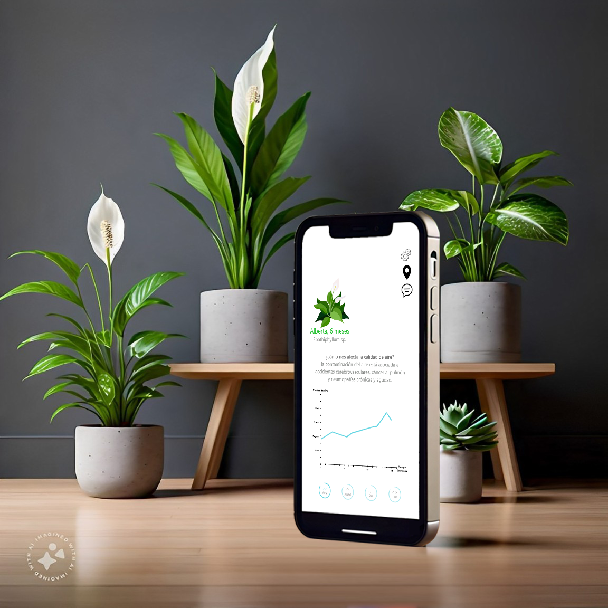
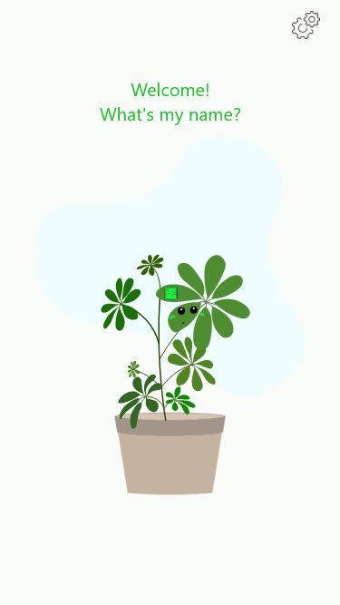
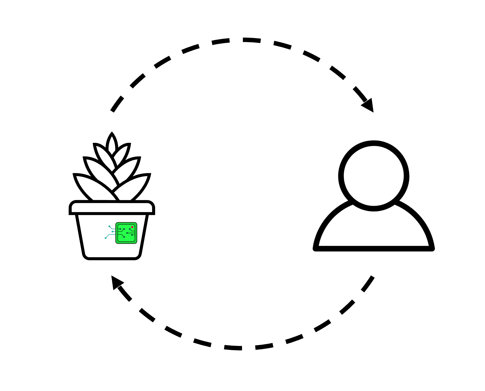
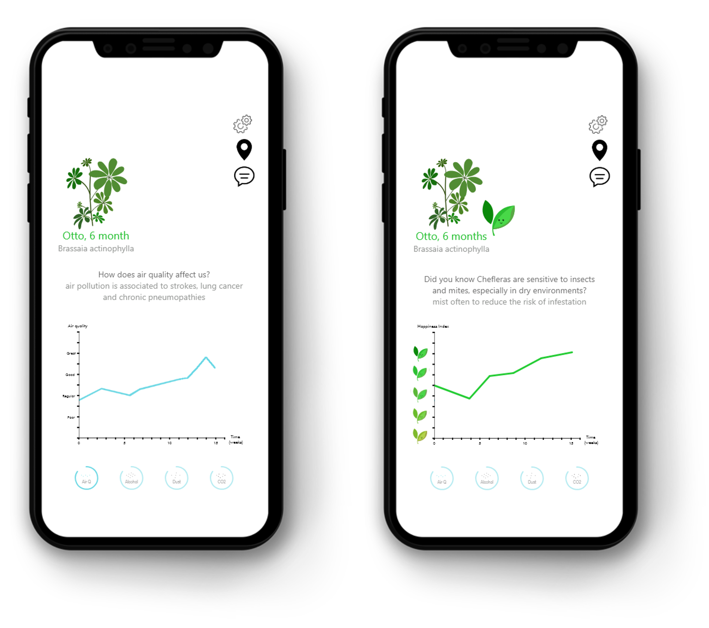
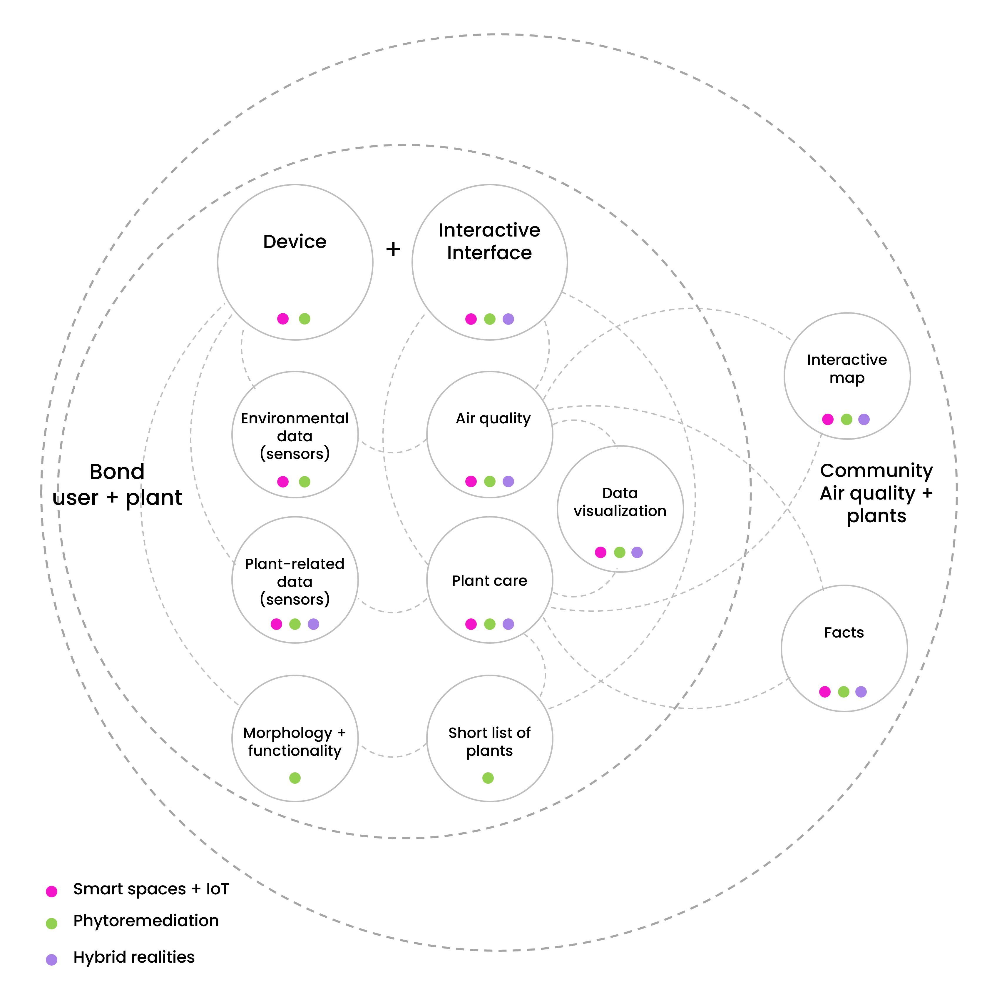
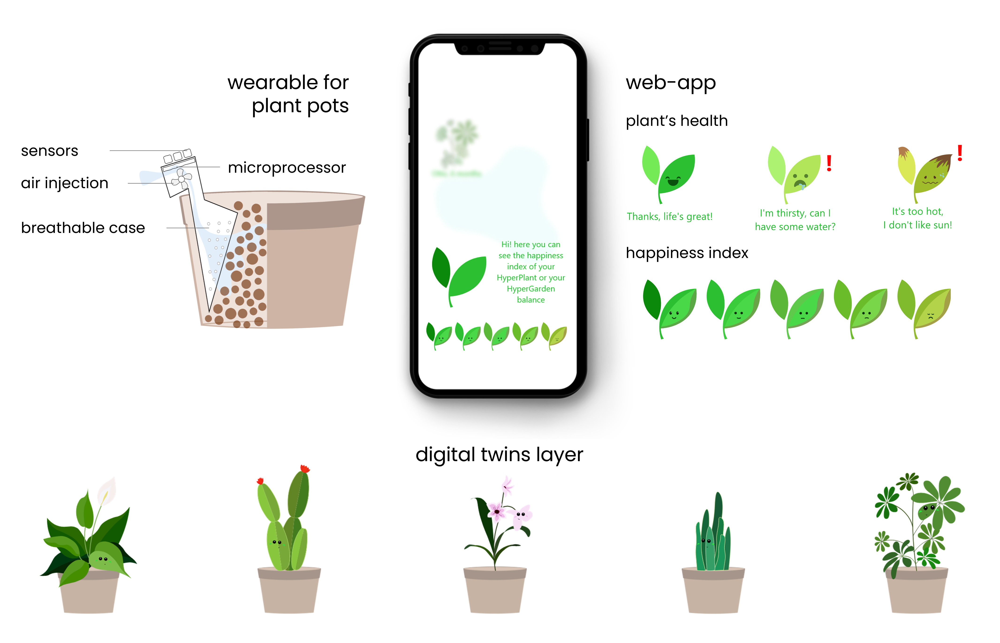
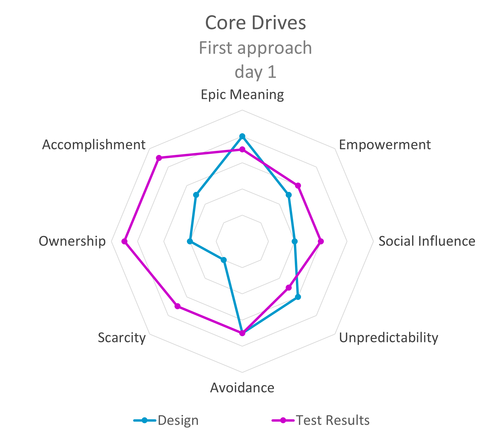
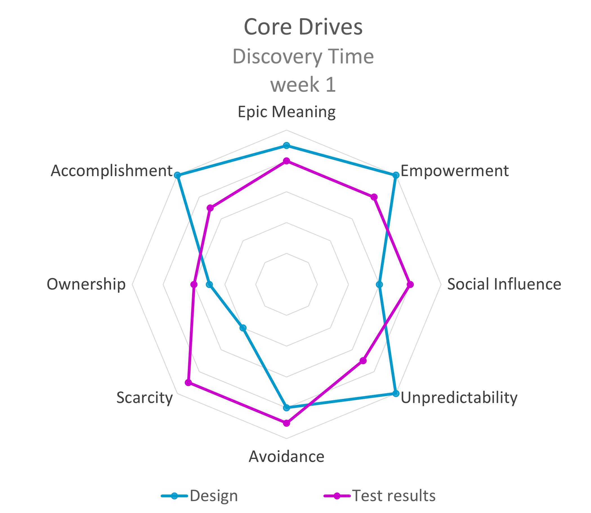

HyperPlant
Interaction design · UX research · Platform and system architecture · Interface design · Prototyping and testing
Platform translating real-time environmental data into a digital avatar interface to support user awareness, care behavior, and long-term engagement.
Impact
- Designed and implemented a functional hybrid platform prototype integrating environmental sensing and digital interaction.
- Developed an avatar-based feedback system translating real-time environmental conditions into an intuitive happiness index.
- Conducted prototype testing to evaluate interaction clarity and engagement.
- Validated how digital representation and gamified feedback can influence care behavior and support long-term engagement.
HyperPlant was developed as a functional prototype to explore how hybrid sensing and digital representation can support long-term behavioral engagement.
Overview
HyperPlant is a hybrid physical–digital platform designed to help users build an ongoing relationship with their plant through real-time environmental feedback and digital representation.

Environmental data collected through embedded sensors was translated into a living digital avatar whose state reflected the plant’s comfort and care conditions, creating a feedback loop between user actions and the plant’s digital presence.
Sensor readings were translated into an avatar “happiness index” that changed over time, making environmental conditions legible through a simple, emotionally resonant representation.
The prototype implemented state-based avatar representations reflecting environmental conditions, allowing users to perceive plant wellbeing through progressive visual feedback and reinforcing the interaction loop between care actions and plant response.

This allowed users to perceive how their actions and surrounding environment influenced a living system, strengthening engagement and responsibility over time.
A functional prototype was implemented and tested to validate interaction clarity and early user engagement.

Platform and ecosystem vision
HyperPlant was designed as a persistent platform where each plant existed as a digital entity connected to real-world environmental data.
The system translated sensor data into an avatar state and behavioral feedback, creating a continuous interaction loop between user actions, environmental conditions, and digital representation.
This platform model enabled future expansion into shared environments, collective monitoring, and community-based plant ecosystems.

System components
The prototype integrated physical sensing, digital representation, and interface interaction into a unified system.
Components included:
- Wearable plant sensing device
- Arduino-based environmental sensors
- Web-based platform and interface
- Avatar system representing plant state and feedback

Together, these elements formed a functional hybrid interaction system connecting physical and digital environments.
User testing & behavioral validation
To evaluate whether the platform fostered emotional engagement and care behavior, I ran a one-week prototype test and analyzed user motivation using the Octalysis behavioral framework.


Results showed alignment between the intended interaction model and real user behavior, particularly in:
- Emotional bonding and sense of responsibility
- Curiosity and continued interaction over time
- Perception of the plant as a living entity rather than a passive object
These findings validated the avatar-based feedback system as an effective mechanism to sustain engagement.
Notes
Functional prototype built and tested in Lima, Peru.
Prototype video→
Interface icons and visual assets were used and adapted as part of a prototype interface for demonstration
purposes.
Independently designed and developed as my Master’s thesis in Interactive Design (University of Buenos Aires).
Full case study→
Dissertation→
Previous versions of HyperPlant were presented at the Chinese
Conference on Bio-inspired Design and Technology (China, 2020) and
The International Image Festival
(Colombia, 2021).